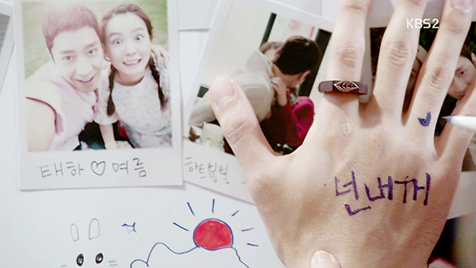
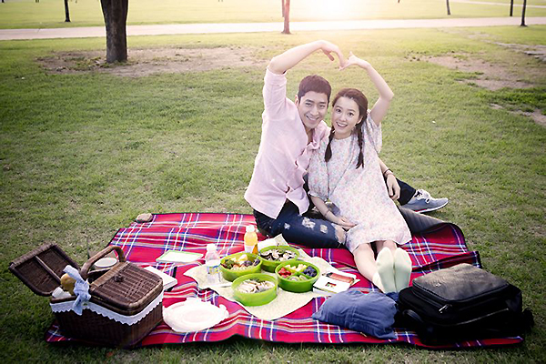
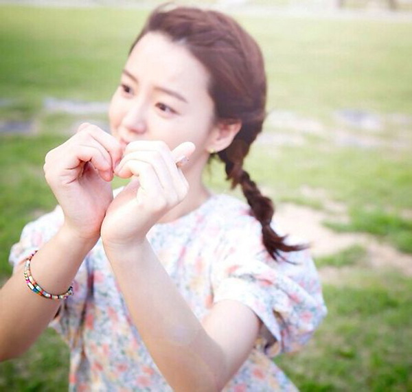

2015年12星座的桃花运
新一年的奋斗又将开始了！2015年你能开启什么样的爱情模式？为婚恋事业继续努力打拼的你，2015年的爱情场上，你走的满载着机遇的阳光大道？还是遍布荆棘的羊肠小道？想要修成正果的人能不能得偿所愿？好想好想谈恋爱的你，爱神会不会大发慈悲地派送激动人心的桃花运到你身边？适婚还因为单身老被人盘问的尴尬局面能不能结束？（请参考太阳及上升星座）
白羊座
人际圈的变化会不断改写白羊座2015年的爱情遭遇，上半年比下半年更容易收获稳定的感情。有伴的牡羊座，上半年人事及环境上的变化很可能表现为：与另一半开始在同一个屋檐下生活，或者干脆就是结婚生子，下半年容易出现各式各样的相处问题，处理家庭关系、经营社交圈会令你顾不上感情生活；单身者，上半年见识不少，吃喝聚会的氛围适合交朋友（特别是异性朋友），只是能不能发展成恋情还有待时间考证，下半年散发着“生人勿近”的气息，与亲近的人也多少有些不快，好好谈一场恋爱的心情被冲淡。
金牛座
金牛座在2015年的爱情运走向是先低后高。单身的金牛座，上半年在人际上有些不爽的遭遇，约会顺利指数也不高，对感情的期望值不高；单恋已久的金牛，上半年要做个了断，即使有被拒绝的风险也要去尝试；下半年增加生活情趣的活动渐多，异性缘不错，有不少机会跟场合跟缘分“萍水相逢”。有伴的金牛，上半年的摩擦、不快多，材米油盐的家庭生活也诸多折腾，生活习惯、生活时间的不同造成不少口角，时间行进到下半年，开始有比较好过的婚恋生活，与另一半会经历难忘的事。

双子座
2015年的爱情运在考验双子的EQ。有伴的双子，这一年更多的精力被拿去应付其他生活的压力，更多时间被消耗在人际圈的扩大与改善上，另一半对你家里家外判若两人的状态不满，可因小事跟你争吵不休，提醒你不要轻易把分手挂嘴边，尤其是在5月下旬到6月下旬这段可能成为感情走向终结的危险期；单身的双子，这一年的恋爱路上容易碰上竞争者，自身也容易吸引喜欢搞暧昧的异性；上半年会因为某些原因不得不跟看不惯的异性来往，搞得自己很累，因此在下半年，单身双子会变得低调，约会次数减少。
巨蟹座
巨蟹座2015年经营人际有紧张感，迫使爱情运无法大踏步发展。有伴的巨蟹，这一年要照料的人、事越来越多，时间的压力对婚恋生活也有影响，与另一半的约会、约定临时改期或取消，在重大的纪念日或节日，也有与另一半两地分隔或其他碰不到面的原因；相对上半年的沉寂，下半年单身巨蟹的交际面会扩大，有利于桃花运的上升，可惜跟上半年有同样的症结：桃花缘有较大的流动性，心仪之人不会一直在你的视线之内，想成功攻心的话，建议去结交TA身边亲近的朋友，打入TA的社交圈。

狮子座
2015年狮子座在感情上折腾越多越容易竹篮打水一场空。有伴的狮子，没有变化的婚恋生活是2015年你不能忍受的事，你会主动发起改变，不惜改变生活作息、生活轨迹：对能调动环境的事务表现积极，很容易留学、游学或出差、外派，若上半年已经有分隔两地的情况出现，那么下半年你的婚恋关系会发生重大改变；单身的狮子，2015年有让你有恋爱婚姻念头的异性，是常常见面的人，或是交往过一阵子的人，但你内心还是有些顾忌，一躲二拖之下就慢慢淡了这心思；下半年单身狮子受困于人际，恋爱能量不足。
处女座
不求爱情运暴涨，但求平稳无波——这是2015年对处女座在感情经营上的建议。单身的处女座，2015年桃花运不是稀缺资源，时不时受关注，可惜烂桃花居多，不能确定谁才是能让你幸福的人，在拒绝不喜欢的人时，也要注意时机与措辞、语气；有伴的处女座，这一年关系易起伏易生变，按部就班地完成恋爱到结婚继而生子经营小日子是比较稳妥的。如果你认定另一半是你想要结婚的人，建议尽快完成终身大事，若你还不能定下心来，那就坦言告知另一半，别给TA希望与承诺之后让TA失望！

天秤座
2015年天秤座对待感情要有好的心理素质。单身的天秤，上半年的异性缘不错，建议多外出参加社交活动，有较高的几率认识条件令你满意的异性；单身天秤下半年也有桃花运，但容易发生变数：因为出其不意的原因，与合眼缘的异性无法保持来往；已有对象还未修成正果的天秤，上半年你与另一半都有增广见闻的机遇，彼此间可分享的经验、话题挺多；下半年建议考虑共同生活或结婚的事宜，达成共识皆大欢喜，但若是无法保持生活步伐、生活理念一致，恐感情生变；已婚的天秤在这一年对待另一半需更有耐心。
天蝎座
2015年天蝎座的爱情运看涨。单身天蝎一整年的异性缘都不错，拓展、更新或维持人际圈的活动多多益善，与你气质相投的场合更要去！不仅结识好对象的机会多，而且遇到有感觉的异性时，对方可能已对你关注多时；已有对象但还未定终身的天蝎，2015年你与另一半在各自的生活圈里都挺忙，两人很多时间都是分头行动，好在这一年你与另一半有共同成长的机会，两人在大事上能共进退，维系感情的建议是：关心TA的同时更要理解TA，给TA时间、空间去“自由活动”，别惧怕生活给感情出难题。
2015年射手座的爱情运可能有不少转折，环境、人事的改变会冲击你本该稳定的爱情运。单身且适婚的射手，这一年有机会跟异性走得比较近，你一度想要确定下来，但考虑到彼此在生活、工作等层面上的发展、走势上的不同步，与TA走到一起的信心还不够；有稳定对象的射手，2015年可能会喜结连理，即使暂时还没准备好结婚，与另一半也会多次谈论到，身边的亲友还会催婚；与另一半感情不大稳定的射手，2015年分手的可能性高，如果说上半年积累下不少相处的矛盾，那么下半年必定就有个了断。
2015年魔羯座在经营感情时有不少反思与观念上的更新。单身的魔羯，下半年比上半年更适合开展恋爱事业，上半年较容易碰到人际方面的困扰，与人相处有较多不快的经验，因此会按下主动恋爱的念头，下半年有较多社交机会，建议单身者改善“面子问题”，不同的衣着不仅能转换气质，还能帮你增加异性关注度！有伴的魔羯，2015年你对感情的未来有自己的规划，若未对另一半明讲，TA可能会猜不到你的想法；上半年与另一半的相处变累的魔羯，下半年会思索结束这段感情，但可能会藕断丝连一段时间。
水瓶座2015年的爱情运有不错的运转，某些变化一开始看似不好，但时间一长就能看到优势。有意将婚事定下来的宝瓶，上半年适合谈定具体时间表，即便临近年末再举行婚礼，早点定下来会显得从容；单身且期待恋爱的水瓶，上半年的异性缘不错（尤其是4月之后），追求者、爱慕者涌现，碰到喜欢的人就抓紧时机拿下吧！上半年对已结婚宝瓶而言也不错，家中添丁的几率较大！下半年安稳度日的想法会盘踞在宝瓶的心头，单身者的心境与上半年大不同，有寻求灵魂伴侣的念头，只是了解异性的时间会不够。
2015年对双鱼而言，是追求感情发展平稳的一年。有伴的双鱼，上半年会酝酿一些跟婚恋生活有关的改变，整体的发展是正面的，只是过程有些繁琐，容易造成心理上的负担，与爱人办理共同生活上的琐事时，难免发生争吵，建议在坚持你认为对的事情的基础上，保持与TA的沟通，切不可自己对两人共同的事务擅作主张；单身的双鱼，2015会有不少与人对峙的事情，与人交往的整体状况不是特别好，碰到与人有关的事也容易烦，对人的耐心被消磨得比较多，因此在感情方面不想有太多精力投入，看人容易带偏见，不利恋爱。